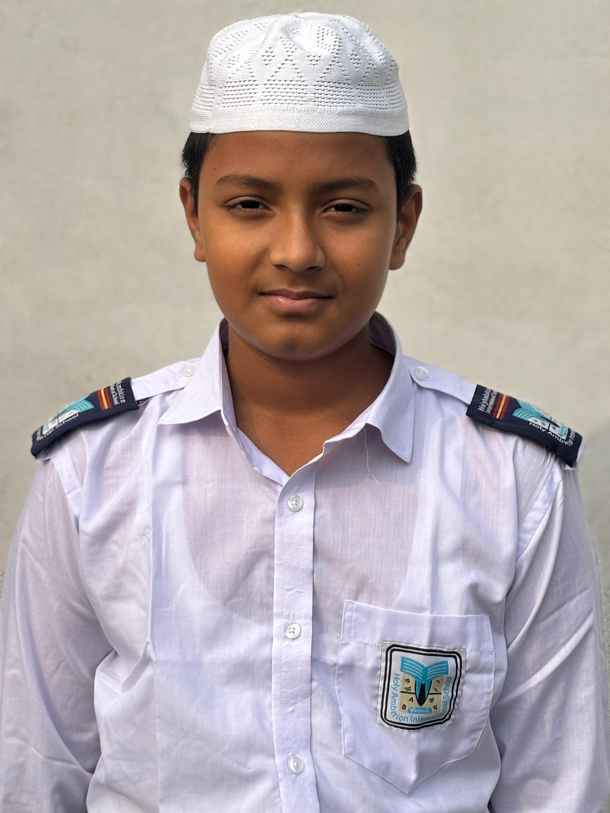

Moin Uddin
- Role: Lead Investigator
- Expertise: Ectoplasmic anomalies
- Strength: Analytical and fearless approach
- Motto: "Uncovering secrets beyond the ordinary."

Atif Ullah
- Role: Paranormal Acoustics Specialist
- Expertise: EVP analysis & spectral sound phenomena
- Strength: Exceptional auditory perception & pattern recognition
- Motto: "Listen closely—the unseen speaks volumes."

Fakhruddin
- Role: Tech Specialist
- Expertise: Digital archiving & data decryption
- Strength: Precision and methodical analysis
- Motto: "Every byte holds a clue."

Oli Ullah
- Role: Creative Field Operative
- Expertise: Artistic documentation of paranormal events
- Strength: Intuitive and innovative perspective
- Motto: "Seeing the unseen with creativity."

Nasir Uddin
- Role: Medical Expert
- Expertise: Human physiology and anomalous biological effects
- Strength: Calm under pressure, diagnostic precision
- Motto: "Understanding the body's response to the unknown."